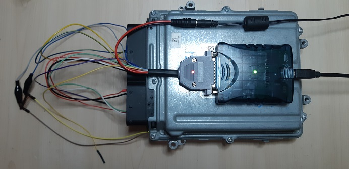
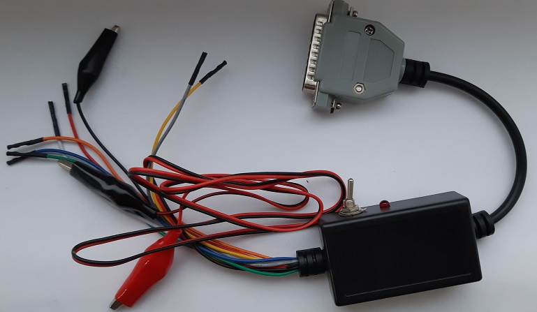
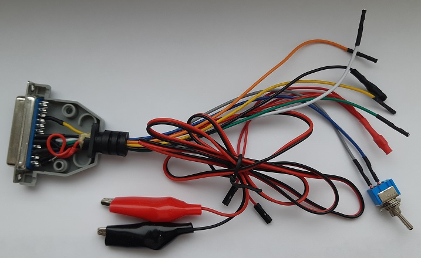

Вариант 1. Прямое подключение к ОБД разъёму Scanmatik 2:
OBD1 - GPT1
OBD2 - GPT2
OBD4, 5 - масса
OBD6 - CAN-H
OBD14 - CAN-L
OBD16 - +12V
ОБЯЗАТЕЛЬНА установка резистора 120 ом между CAN-H и CAN-L!
Ручное управление питанием!
Вариант 2. Прямое подключение к DB25 Scanmatik 2:
DB25-23 - GPT1
DB25-4 - GPT2
DB25-20, 21 - масса
DB25-8 - CAN-H
DB25-9 - CAN-L
DB25-12, 13- +12V
ОБЯЗАТЕЛЬНА установка резистора 120 ом между CAN-H и CAN-L!
Ручное управление питанием!
Вариант 3. Подключение через PowerBox for PCMflash или GPT Adapter или "Кесс-коробка" без доработок
Этот вариант не рекомендуется, т.к. в таком случае на GPT пинах может появиться опасное напряжение (до +12в), но если не соваться с ними внутрь блоков, проблем быть не должно. Для подключения просто воткнуть Scanmatik в ОБД разъём приборов, а в Настройках загрузчика поставить галку напротив "Альтернативные пины GPT для Scanmatik (не рекомендуется)". После этого GPT сигналы Scanmatik будут на желтом и фиолетовом проводах (K-Line и Vpp).
Вариант 4. Доработка Powerbox (обращайтесь к производителю) или новый Powerbox с серой наклейкой. Используются штатные выходы GPT PowerBox, полностью безопасно.
Вариант 5. Скоро будет доступен у дилеров (не у меня), boot/bench кабель для Scanmatic 2/Pro, в DB-25 разъёме которого смонтирована схема автоматического питания, а также управления BOOT пинами для 53го пакета. Т.е. это продвинутый вариант номер 2. Поставщик - не Scanmatik, так что туда запросы слать не нужно!
Фото прототипа кабеля с MED17.7.3.1, работа в BSL.

Идеи для "колхозных" вариантов кабелей.
Вариант А. "БОМЖ-кабель" можно изготовить самостоятельно по варианту 1. Для этого можно воспользоваться кабелем-заготовкой от пластиковой коробки, которую китайцы клали в клоны кесса. Оттуда можно взять провода с пинами и крокодилами, корпус разъёма DB-25, а в магазине потребуется купить недостающие клеммы, разъём DB-25 "мама", защитный диод (можно попробовать тоже взять из коробки) и резистор 120 ом на кан шину. Если повезёт, то кабель будет с резиновой втулкой, которая вставится в разъём DB-25. Фото внизу сообщения. Управление питанием ручное, можно просто в нужный момент подключаться к АКБ автомобиля.
Фото - что было:

Фото - что стало:

Куда припаять провода:
DB25-12 - диод - красный - внешнее питание
DB25-13 - (серый - тумблер - синий) - красный - питание ЭБУ
DB25-4 - оранжевый - GPT2
DB25-8 - белый - CAN-H
DB25-9 - зелёный - CAN-L
DB25-20 - чёрный - масса ЭБУ
DB25-21 - чёрный - внешнее питание
DB25-23 - жёлтый - GPT1
На картинке:
а) между 8 и 9 припаян резистор 120 ом (в данном случае SMD, но значения не имеет)
б) тумблер подключен к серому и синему проводу, эта вся конструкция включена между сканматиком (2й контакт) и красным проводом, сделано для удобства ручного питания. Можно выкинуть. Тумблер с узкими контактами, такими, чтобы можно было вставить в пины (это надёжнее, чем просто пайка).
в) на картинке жёлтый и оранжевый наоборот, значения это не имеет особого
Вариант Б. "Кесс-коробка", та самая железная, которую переделывали для 53го пакета. Необходимо вывести GPT от Scanmatik 2 одним из двух способов: 1) внутри DB-25 прицепиться к проводам идущим от контактов 1 и 2 OBD розетки (от Scanmatik) и вывести их наружу, либо 2) если внутри вы не поставили GPT плату или давно её сожгли (и выкинули), то достаточно просто организовать "транзит" GPT сигналов от DB25 до DB15):
В шнуре к кесс коробке соединить:
1й контакт OBD - DB25-8
2й контакт OBD - DB25-20
в шнуре к блоку DB15 добавить два провода (если их нет)
DB15-3 - GPT1
DB15-12 - GPT2